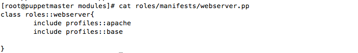

Profiles and Roles are simply modules. You create modules first and add the manifest from modules into the profiles which eventually gets combined into the role
What is Profiles ?
Profiles is a class declarations which also defines class parameters if required and contains minimal logic. This is better way of desiging the classes for reusable purpose.
class profiles::apache($parameters="value") {
include apache
include php
include phpmyadmin
}
What is Roles ?
Roles are simply collections of Profiles.Roles will call the profiles, which will contain the stack of technology.
class roles::webserver {
include profiles
#should contain no logic
}
This server role is webserver role
There might be another server with mysqlserver role
class roles::mysqlserver {
include profiles # profiles will have mysql, mysql admin,postgres
}
Facts:
Profiles
cd /etc/puppet/modules/
puppet modules generate profiles or mkdir profiles/{manifests,files}
vi /etc/puppet/modules/profiles/manifests/apache.pp
vi /etc/puppet/modules/profiles/manifests/base.pp
Roles
puppet modules generate roles
vi /etc/puppet/modules/roles/manifest/webserver.pp
Use External Node Classifer (ENC) to apply the class to the node,
[root@puppetmaster~]# vi /etc/puppet/manifest/site.pp
node 'puppetclient.us-west-2.compute.internal' {
include roles::webserver
}
Apply it to the client machine
pupept agent -t
Info: Applying configuration version '1452052856' Notice: /Stage[main]/Profiles::Apache/Package[httpd]/ensure: created Notice: /Stage[main]/Profiles::Apache/Service[httpd]/ensure: ensure changed 'stopped' to 'running' Info: /Stage[main]/Profiles::Apache/Service[httpd]: Unscheduling refresh on Service[httpd] Notice: Finished catalog run in 6.88 seconds
Many nodes makes mess when you have many classes.To overcome this problem, roles and profiles was introduced
1) Hera.example.com needs networking and users class.We combine both into
one profile named base.it removed the hassle of writing both in external node classifier
2) Similarly, hermes.example.com needs six classes, it will really be mess,when you have many classes, thus you combine all this classes into one profile and include that profile in the role.